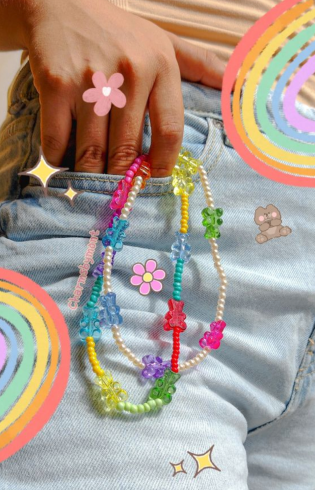

¿Quienes somos?
Somos un pequeño equipo experto en crear accesorios juveniles hechos a mano, diseñados con amor y dedicación. Cada pieza refleja nuestro compromiso con la calidad y el estilo, ofreciéndote accesorios únicos para cada ocasión.
MISIÓN
Crear mercancía que refleje estilo y autenticidad en cada persona que la lleva.
VISIÓN
Ser una marca distintiva por la originalidad de nuestros diseños y la satisfacción de nuestros clientes.
